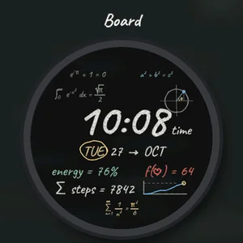
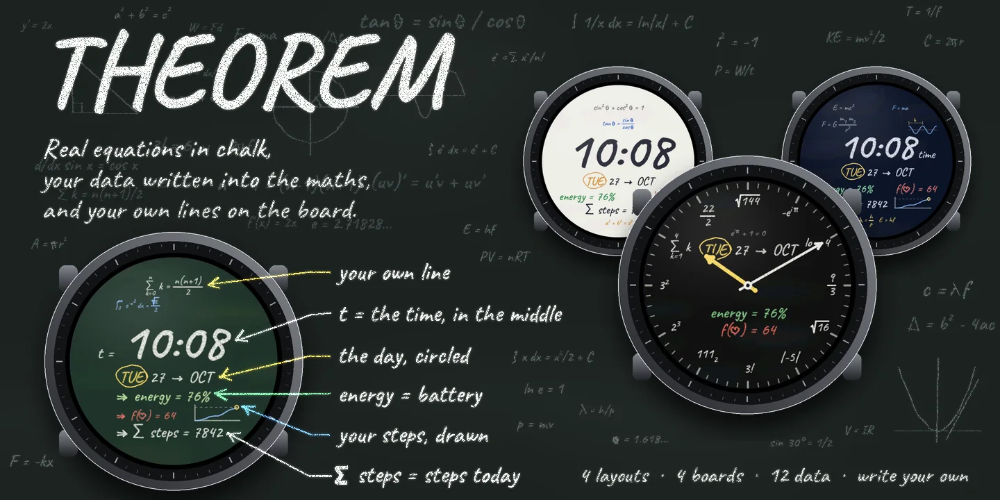
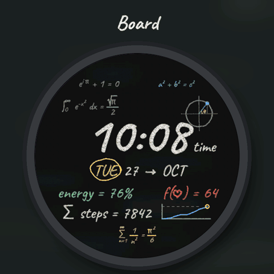
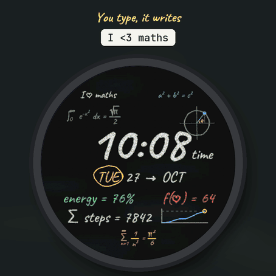
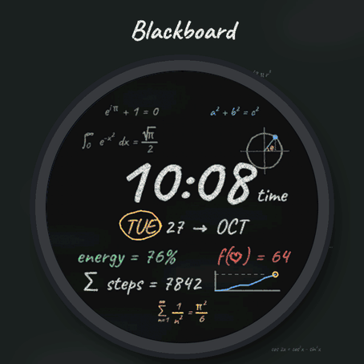
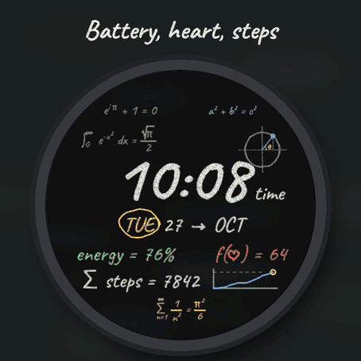
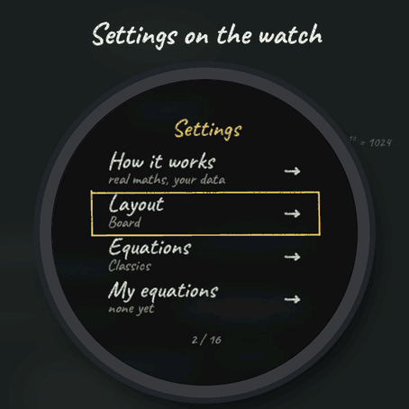

TibereJ › Watch faces › THEOREM
Watch face for Garmin watches
THEOREM
Math Chalkboard Watch Face







Settings on the watch
Hold UP, pick Watch Face, select Theorem, press START, then Customize. The menu is written in chalk like the face: How it works, the layout, the equations, My equations, How to write, the board, the chalk, three data lines, the step curve, the hours and the always-on brightness. The same settings are in Garmin Connect.
A real blackboard
The face is a blackboard covered with true equations in chalk, and your data are written into the maths: the time in the middle, the day circled, energy = 76% is your battery, f(heart) = 64 your heart rate, sum steps = 7842 your steps, and a small graph draws your steps through the day against your goal. Four sets of equations: Classics, Calculus, Physics and Geometry, each with its own drawing (unit circle, tangent to a parabola, wavelength, right triangle), or Mix to change every hour.
Four layouts
- Board: equations all around the time, with the drawing.
- Big time: the time very large in the middle.
- Proof: a worked solution, t = the time, then each data line as a step.
- Math clock: chalk hands drawn as vectors, and every hour on the dial is an equation equal to it (sqrt 144 at twelve, 3! at six, 111 in binary at seven), with the date and two data lines.
Write your own equations
In Garmin Connect, open this face's settings and type up to three lines (My equation 1, 2, 3). They take the big places on the board, in order (three in Board and Big time, two in Proof, one in Math clock). Type them as plain text:
- x^2 or x^{n+1} powers a_n or a_{ij} indices {a}/{b} a fraction sqrt{2} a square root pi theta alpha inf Greek letters and infinity sum_{n=1}^{inf} a sum with its bounds lim_{x \to 0} a limit int_0^1 f(x) dx an integral \to \implies \ge \le \ne \approx \pm \heart arrows and signs
LaTeX works too (\frac{a}{b}, \pi, \sqrt{x}), and so do symbols typed on your phone (pi, squared, root). Words and names stay as you wrote them. On the watch, My equations shows each line as received, how it is written on the board, and what is wrong if something is (a brace not closed, a sign it cannot write, a line too long). How to write shows examples. Leave a line empty to keep the board's own equation.
Make it yours
- Four boards: black, green, navy, or a whiteboard written in marker.
- Coloured chalk or white only. A clean board with three equations.
- Three data lines: battery, heart rate, steps, Body Battery, calories, floors, distance, intensity minutes, notifications, temperature, the next sunrise or sunset, or altitude. If your watch has no value, the line shows -- rather than a made-up number.
- Hours like your watch, 24-hour or 12-hour, with or without a leading zero.
Always-on
A separate always-on design on a black screen: the time in grey chalk and the date, or grey hands in Math clock. It shifts slightly every minute to protect the screen.
The face asks for the location permission for sunrise and sunset; the position never leaves the watch. Compatible with the Garmin AMOLED watches listed below. English only. Questions or a watch you would like to see supported: use the support e-mail on this page.
Handwriting font: Caveat, by the Caveat Project Authors (SIL Open Font License).